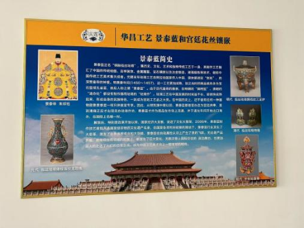

中国掐丝珐琅传承网
中国掐丝珐琅传承网
00
-
00
-
00
中国掐丝珐琅传承网
来源：“材聚天理” 微信公众号
兰辉
围绕非物质文化遗产的保护与传承，展开了一系列的非遗调研活动。本报告旨在通过查阅相关材料、实地走访、访谈记录等方式，全面剖析非遗文化的生存状态，提出切实可行的传承策略，为乡村振兴与文化自信贡献力量。
景泰蓝，正名“铜胎掐丝珐琅”，是一种在铜胎上，用柔软的扁铜丝掐成各种花纹然后焊上，把矿物质的釉料填充在花纹里烧制而成的器物。元朝末年珐琅工艺自阿拉伯国家传入中国，很快便进驻 “宫廷”，深受皇帝的钟爱。明景泰年间（1450～1457），这一工艺更加成熟，加之当时的制品底色多为宝石蓝或孔雀蓝，故后人称之谓 “景泰蓝”。从明到清中期以前，景泰蓝都是官办且为宫廷供奉，直到清雍正后才出现民办珐琅作坊，景泰蓝才作为商品在市场上流通，并于道光年间开始出口海外，在国际上名噪一时。解放后，特别是改革开放以来，国家经济大发展，促进了文化大繁荣，2006年，景泰蓝制作技艺入选首批国家级非物质文化遗产名录。
景泰蓝作为国家级非物质文化遗产，受到政府与社会各界的保护与关注，但在我们日常生活中却很少见到它的身影，非遗技艺的传承单靠非遗传承人个人的力量还是太薄弱了，如果想把这项技艺传承下去，我们首先得让更多的人了解它，懂得欣赏它，才能让人们真正爱上它。所以加强景泰蓝的宣传工作，发掘景泰蓝的发展潜力，助力景泰蓝的保护与传承已经迫在眉睫。
兰辉于1月24日前往天津市武清区华昌工艺品厂并进行实地走访，参观体验景泰蓝传统手工制作技艺。通过与非遗传承人何爱莲老师以及她的丈夫马国庆老师的交流，了解了他们对非遗文化传承、制作、以及保护措施等方面的见解和建议。最后兰辉对此次非遗文化调研进行总结，形成调研报告。
景泰蓝从海外传入中国，至今已有600多年的历史，但也是深锁宫廷的600年，因其极为珍贵，老百姓很少能看到真正的景泰蓝制品。天津武清景泰蓝传统手工制作技艺现已有100多年的历史。天津武清区毗邻北京，手艺人多进京学艺，然后回乡开办作坊。非遗传承人何爱莲老师的爱人马国庆老师祖上世代为官，清朝末年掌管内务府，便把一些村里的亲戚带进京做学徒，学习宫廷花丝镶嵌和景泰蓝制作技艺。随后家族代代相传，将传统手工技艺传承至今。1993年，非遗传承人何爱莲老师和其爱人马国庆老师共同成立了天津市武清区华昌工艺品厂，生产景泰蓝、宫廷花丝镶嵌和铁丝编工艺品出口。其在国家政策的支持下很快打开了国外市场，生产规模越来越大，形成了以大良镇北小营村为中心辐射周边多个乡镇的外贸主打产业。因为制作工艺精湛，此产品很快成为国内外中高端消费群体馈赠和收藏的艺术品。2006年，景泰蓝制作工艺被评为第一批国家级非物质文化遗产，2008年，宫廷花丝镶嵌手工工艺被评为第二批国家级非物质文化遗产，武清景泰蓝传统手工制作技艺又被评为市级非物质文化遗产。2016年，非遗传承人何爱莲老师和其爱人马国庆老师又成立了天津荣金工艺品有限公司。经过30年的发展，目前他们的产品运销20多个国家和地区。2023年，华昌工艺品厂还被天津市文化和旅游局列入天津市第一批非遗传承体验基地。
非遗传承人何爱莲老师说:景泰蓝的制作工艺非常复杂，用料又很昂贵。材料多采用金银铜三种金属，珐琅的釉料就是由各种颜色的宝石磨成粉得到的。景泰蓝整体制作下来大致分为七个主要步骤，即图案设计、制胎、掐丝、点蓝、烧蓝、磨光、镀金，这七大步骤中又可以分出108道工序，需要十几个人分工合作，制作时长最少也需要100天，失之毫厘，就将前功尽弃，因此对制作者的要求非常高，需要制作者有足够的耐心和细心。
非遗传承人何爱莲老师说:我们最初成立武清区华昌工艺品厂时，厂里只有二三十人，后来慢慢发展到了两三百人，可随着人员的年龄越来越大，目前厂子里在一线制作的员工平均年龄大概在50岁左右，员工流失严重，我们现在面临着后继无人的情况。像景泰蓝这样的传统手工技艺至少需要三年才能出师，我做这行做了35年，从头到尾每一项工序我都会，但我现在制作景泰蓝还是采取合作的方式，因为每个人擅长的项目都不一样，有的人掐丝做得好，有的人点蓝很厉害，只有把每个人的强项都集合起来，才能真正制作出一件精品。但这对现在的年轻人来说太难了，要坚持至少三年，还得每天面对桔燥的流程日复一日地练习，很难有人能坚持下来。
非遗传承人何爱莲老师说:作为第四代非遗传承人，我觉得我们有义务和责任将非遗继续传承和发展下去。景泰蓝传统手工制作技艺十分复杂，是老一辈的手工匠人一代代传承下来的，因此古法技艺不能丢，我们必须坚持手工制作。
我想非遗技艺的传承单靠我们个人的力量还是太薄弱了，但如果能够从娃娃抓起，让非遗进入校园，或许就会有很大的成效。目前北京工美技校己经将景泰蓝制作技艺作为他们的一门学科，让孩子们系统地学习这项技艺，将这门技艺变为自己的一项技能，或许对孩子们来说会更容易坚持下来。我也希望未来能够在天津推动景泰蓝进校园，如何让越来越多的年轻人对这项非遗产生兴趣，是我一直在思考的问题。